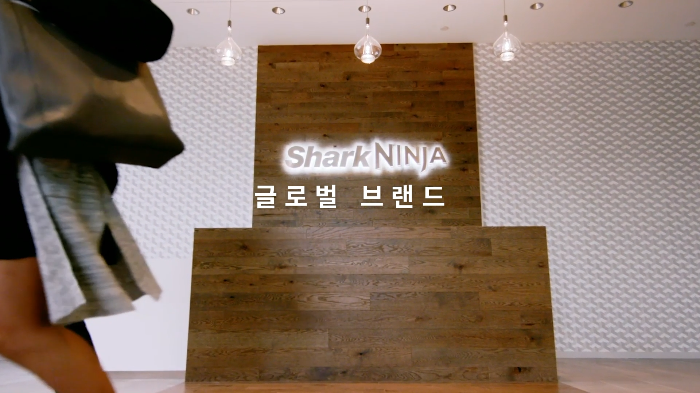

로보락 인서트,
판매 영상 제작
생활 동선과 청소 성능을 한눈에 보여준 홈쇼핑 구성
홈쇼핑, BTV, 유튜브 판매 영상까지.
제품의 장점을 한 장면 안에 설득력 있게 담아 구매 전환을 돕는 인서트 제작 사례를 모았습니다.

Featured Case
제품 기술과 사용 장면을 홈쇼핑 판매 흐름에 맞춰 구성한 장기 제작 사례입니다.
프리미엄 제품의 기능 차이를 쉽고 빠르게 전달하는 데 집중했습니다.
생활 동선과 청소 성능을 한눈에 보여준 홈쇼핑 구성

제품 체험 장면과 공간 연출을 결합한 구매 설득형 영상

조리 과정과 사용 편의성을 빠르게 전달한 판매 영상

흡입력, 사용성, 제품 디테일을 장면별로 분리해 설득력을 높인 사례

제품의 기능적 장점과 촬영 결과물을 함께 보여주는 인서트 구성

제품 신뢰도와 사용 상황을 중심으로 만든 방송용 영상

건강기능식품의 핵심 메시지를 짧고 명확하게 전달한 사례

제품 사용 전후의 차이를 직관적으로 보여주는 판매 구성

문제 상황과 해결 장면을 연결해 제품 필요성을 만든 영상

제품의 건강한 사용 장면과 브랜드 이미지를 함께 전달한 제작 사례

실사용 장면과 제품 장점을 방송 흐름에 맞게 압축

전문 제품의 장점을 소비자가 이해하기 쉬운 구조로 정리

브랜드 신뢰와 제품 사용감을 함께 보여준 뷰티 판매 영상
Production Flow
비슷한 인서트 영상이 필요하신가요?